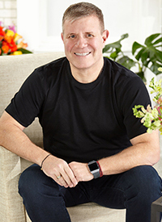

Jeff ClarkeJeff ClarkeExecutive ChairmanJeff Clarke has been the Executive Chairman of FTD since August 2019. He leads the FTD management team and serves on the company's Board of Directors. Jeff has more than 30 years of leadership and operational experience. Most recently, Jeff was the Chief Executive Officer of Eastman Kodak Company from 2014-2019. In addition, Jeff was Chairman of the Board of Orbitz Worldwide from 2007 to 2014 and Chief Executive Officer of Travelport, Ltd. from 2006 to 2011. From 2004 to 2006, he was the Chief Operating Officer of CA Software and from 2002 to 2003 the Executive Vice President of Hewlett Packard Company. Jeff was also the Chief Financial Officer of Compaq Computer from 2001 to 2002. He serves on the Board of Directors of Docker, Inc. and California Cyrobank. Jeff has a Master of Business Administration from Northeastern University, where he currently serves as a Trustee, and a Bachelor's degree in Economics from State University of New York at Geneseo. | |
Scott D. LevinVice Chairman, Chief Administrative Officer and General CounselScott D. Levin has been our Vice Chairman, Chief Administrative Officer and General Counsel since August 2019. Prior to the going-private transaction with Nexus Capital Management, Scott held several executive positions with FTD Companies, Inc. starting in 2013 as Executive Vice President, General Counsel and Secretary, and served as President, Chief Executive Officer and a member of the Board of Directors in 2018 until the sale to Nexus in 2019. Scott also served as Vice President and General Counsel of FTD, Inc. from 1996 to 1999, following FTD's conversion from a not-for-profit florist-owned trade association to a Private Equity owned for-profit company. In addition to his FTD experience, Scott was the Chief Legal Officer and Secretary of Coskata, Inc., a Blackstone-owned renewable fuels and chemicals production company, from 2012 to 2013. From 2007 to 2012, he was Senior Vice President, General Counsel and Secretary for Morton's Restaurant Group, Inc. Prior to that, Scott held General Counsel positions at Torex Retail Americas (a global technology solutions provider) and OurHouse, Inc. (the home improvement e-commerce business for Ace Hardware Corporation). He also worked at Schulte Roth & Zabel LLP in New York City where he practiced in the mergers and acquisitions, securities and finance areas. Scott earned a J.D. from The National Law Center at George Washington University and a Bachelor's degree from Boston College. |
|
Steve Tucker, CPAExecutive Vice President, Chief Financial Officer and TreasurerSteve Tucker was appointed Executive Vice President, Chief Financial Officer and Treasurer for FTD in August 2019. He joined FTD as Vice President, Corporate Controller in January 2019. Steve has over 30 years of experience across consumer goods and services companies as well as B2B distribution. Previously, Steve worked at Bally Total Fitness, a leading health and fitness company, where he served for more than 20 years in a variety of accounting, finance and strategy roles, including Chief Financial Officer and acting Chief Executive Officer. From 1996 to 1998, Steve served as Controller for Berlin Packaging, a privately held distributor of ridged packaging, and 11 years with the public accounting firm, Grant Thornton. He currently serves on the Bally Total Fitness's board of directors. Steve has a Bachelor of Science in Accounting from Illinois State University. |
|
Tom D. MoellerExecutive Vice President, Florist DivisionTom D. Moeller is the head of our Florist Division and has been with FTD since April 2010. He joined FTD as Executive Vice President, Florists' Transworld Delivery, Inc. from the William Wrigley Jr. Company, where he served as Global Chief Customer Officer since 2007 and as Vice President, U.S. Customer Sales and Support from 2001 to 2007. Prior to Wrigley, Tom served as General Manager at Schering-Plough HealthCare, responsible for their Wal-Mart and Alternative Trade Channel businesses. Before joining Schering-Plough, he spent 12 years at Nabisco, Inc. in various sales and customer marketing roles. Tom has had over 25 years of experience in consumer packaged goods. He is a graduate of Wartburg College and continued his executive education at Northwestern University and Cornell University. |
|
|

|
Jay TopperExecutive Vice President, Chief Digital OfficerJay Topper was promoted to Executive Vice President and Chief Digital Officer in July 2018. Jay is now responsible for the U.S. Consumer business including marketing, merchandising, technology, and supply chain. Jay joined FTD as Executive Vice President, Chief Information Officer in October 2016. Previously, he served as the Chief Information Officer, Chief Technology Officer and Operations for VitaCost.com, a subsidiary of the Kroger Company. Prior to Vitacost.com, he served as Senior Vice President, Customer Success and Chief Information Officer for Rosetta Stone, Inc. through their IPO. Earlier in his career, Jay held various progressive leadership roles as a Commissioned Officer in the US Coast Guard including a tour in Panama working for Naval Intelligence, and five years at sea in Law Enforcement on the Eastern seaboard. He earned a Bachelor of Science in Mathematics from the US Coast Guard Academy and his Master of Science in Telecommunications and Information Management from the Tandon School of Engineering of New York University. His business passion is working for companies that uplift people's lives, and his favorite flowers are snapdragons! |
 |
Aimee BaldassaroSenior Vice President, Chief Transformation OfficerAimee Baldassaro serves as Chief Transformation Officer overseeing enterprise-wide initiatives driving holistic improvements for the health of the organization. She is also the Senior Vice President of Customer Experience where she manages the organization servicing both our consumer and member florist customers. Aimee also leads the enterprise customer satisfaction programs focused on bringing delight to consumers, florists and partners alike. Aimee has been a part of the team at FTD since 2003 where she has had progressive responsibility within customer service including most recently, Vice President of Customer Service and Order Distribution. Before joining FTD, she was General Manager for Flowers USA Inc., an early online floral marketing company. An industry veteran, Aimee has "flowers in her blood." Her favorite flower is the orchid. |
Jill BrinkmannSenior Vice President, Human ResourcesJill Brinkmann has been our Senior Vice President of Human Resources since April 2019. Jill joined FTD in 2012 as a Human Resources Manager and prior to her current appointment, she has served at the Director, Senior Director and Vice President levels during her tenure with the Company. Before joining FTD, Jill had more than 20 years of Human Resources leadership experience in predominately transportation, logistics, and B2B service organizations. She offers practical guidance and brings a common sense approach to aligning our most important asset, our team members, to the Company's strategic objectives. Jill holds a Bachelor's of Arts in English from Bradley University in Peoria. Her favorite flowers are native perennials grown in her garden, including Bee Balm and Echinacea. |